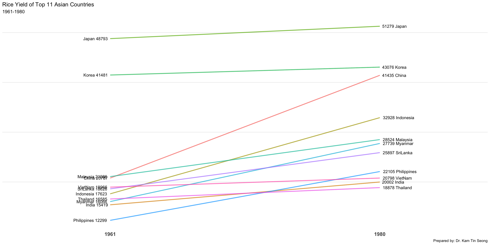

pacman::p_load(scales, viridis, lubridate, ggthemes,
gridExtra, readxl, knitr, data.table,
CGPfunctions, ggHoriPlot, tidyverse)Hands-on Exercise 8
Visualising and Analysing Time-oriented Data
In this chapter we will :
Create a calendar heatmap using ggplot2.
Create a cycle plot using ggplot2.
Create a slope graph.
Create a horizon chart.
Getting Started
Install and launch the following R packages:
Plotting Calendar Heatmap
In this section we will learn:
Create calendar heatmaps with ggplot2 and related extensions.
Write your own functions in R.
Extract and derive date-time variables using base R and lubridate.
Prepare and transform data using tidyr and dplyr.
Importing the data
attacks <- read_csv("data/eventlog.csv")Examining the data structure
Before proceeding with the analysis, it is important to examine the imported data frame.The kable() function provides a convenient way to view and review its structure.
kable(head(attacks))| timestamp | source_country | tz |
|---|---|---|
| 2015-03-12 15:59:16 | CN | Asia/Shanghai |
| 2015-03-12 16:00:48 | FR | Europe/Paris |
| 2015-03-12 16:02:26 | CN | Asia/Shanghai |
| 2015-03-12 16:02:38 | US | America/Chicago |
| 2015-03-12 16:03:22 | CN | Asia/Shanghai |
| 2015-03-12 16:03:45 | CN | Asia/Shanghai |
Data Preparation
Before creating the calendar heatmap, we need to derive two additional variables: wkday (weekday) and hour (hour of the day). In this step, we will create an R function to generate these variables from the date-time field.
Deriving the attacks tibble data frame
Building the Calendar Heatmaps
grouped <- attacks %>%
count(wkday, hour) %>%
ungroup() %>%
na.omit()
ggplot(grouped,
aes(hour,
wkday,
fill = n)) +
geom_tile(color = "white",
size = 0.1) +
theme_tufte(base_family = "Helvetica") +
coord_equal() +
scale_fill_gradient(name = "# of attacks",
low = "sky blue",
high = "dark blue") +
labs(x = NULL,
y = NULL,
title = "Attacks by weekday and time of day") +
theme(axis.ticks = element_blank(),
plot.title = element_text(hjust = 0.5),
legend.title = element_text(size = 8),
legend.text = element_text(size = 6) )
Plotting Multiple Calendar Heatmaps
Step 1: Deriving the Attack-by-Country Data Frame
To identify the top four countries with the highest number of attacks, we will:
Count the number of attacks by country.
Calculate each country’s percentage share of total attacks.
Save the results as a tibble data frame.
attacks_by_country <- count(
attacks, source_country) %>%
mutate(percent = percent(n/sum(n))) %>%
arrange(desc(n))Step 2: Preparing the Tidy Data Frame
In this step, we filter the attacks data frame to retain records from the top four countries with the highest number of attacks. The resulting dataset is stored as a new tibble, top4_attacks.
Step 3: Plotting the Multiple Calender Heatmap by using ggplot2 package.
ggplot(top4_attacks,
aes(hour,
wkday,
fill = n)) +
geom_tile(color = "white",
size = 0.1) +
theme_tufte(base_family = "Helvetica") +
coord_equal() +
scale_fill_gradient(name = "# of attacks",
low = "sky blue",
high = "dark blue") +
facet_wrap(~source_country, ncol = 2) +
labs(x = NULL, y = NULL,
title = "Attacks on top 4 countries by weekday and time of day") +
theme(axis.ticks = element_blank(),
axis.text.x = element_text(size = 7),
plot.title = element_text(hjust = 0.5),
legend.title = element_text(size = 8),
legend.text = element_text(size = 6) )
Plotting Cycle Plot
Step 1: Data Import
air <- read_excel("data/arrivals_by_air.xlsx")Step 2: Deriving month and year fields
air$month <- factor(month(air$`Month-Year`),
levels=1:12,
labels=month.abb,
ordered=TRUE)
air$year <- year(ymd(air$`Month-Year`))Step 3: Extracting the target country
Vietnam <- air %>%
select(`Vietnam`,
month,
year) %>%
filter(year >= 2010)Step 4: Computing year average arrivals by month
hline.data <- Vietnam %>%
group_by(month) %>%
summarise(avgvalue = mean(`Vietnam`))Step 5: Plotting the cycle plot
ggplot() +
geom_line(data=Vietnam,
aes(x=year,
y=`Vietnam`,
group=month),
colour="black") +
geom_hline(aes(yintercept=avgvalue),
data=hline.data,
linetype=6,
colour="red",
size=0.5) +
facet_grid(~month) +
labs(axis.text.x = element_blank(),
title = "Visitor arrivals from Vietnam by air, Jan 2010-Dec 2019") +
xlab("") +
ylab("No. of Visitors") +
theme_tufte(base_family = "Helvetica")
Plotting Slopegraph
Step 1: Data Import
rice <- read_csv("data/rice.csv")Step 2: Plotting the slopegraph
library(ggplot2)
library(dplyr)
plot_data <- rice %>%
filter(Year %in% c(1961, 1980)) %>%
mutate(Year = factor(Year))
ggplot(plot_data, aes(x = Year, y = Yield, group = Country)) +
geom_line(aes(color = Country), size = 1, alpha = 0.7) +
geom_text(data = plot_data %>% filter(Year == "1961"),
aes(label = paste(Country, Yield)),
hjust = 1.1, size = 3.5) +
geom_text(data = plot_data %>% filter(Year == "1980"),
aes(label = paste(Yield, Country)),
hjust = -0.1, size = 3.5) +
scale_x_discrete(expand = expansion(mult = c(0.4, 0.4))) +
labs(title = "Rice Yield of Top 11 Asian Countries",
subtitle = "1961-1980",
caption = "Prepared by: Dr. Kam Tin Seong") +
theme_minimal() +
theme(
legend.position = "none",
panel.grid.major.x = element_blank(),
panel.grid.minor = element_blank(),
axis.title = element_blank(),
axis.text.y = element_blank(),
axis.text.x = element_text(size = 12, face = "bold")
)